Options Setting
Note: The Plugins section at the end of the page still needs revision.
Quick links to content of this page.
The Display
General
Navigation Modes
North Up /Course Up North Up is the normal way charts are shown, with north at the top. Course Up rotates the chart so what you see in front of the boat in real life is above the Own Ship icon on the display.
Lookahead Mode The Own Ship icon will be offset from the center of the screen so that more of the chart is in front of Own Ship than behind. Read more in Auto Followand Display Orientation
Chart Display
Enable Chart Quilting The screen shows several charts seamlessly stitched together. More in Chart Quilting.
Preserve scale when switching charts Normally when switching charts OpenCPN will open the new chart scaled close to it's natural scale, the zoom factor stays the same. With this box ticked OpenCPN will keep the scale from the last chart as close as possible when switching. The zoom-factor will increase as you switch to smaller scale charts.
Controls
Smooth Panning/Zooming This works best together with OpenGL. Test to see how it works with your graphic card. If you are using OpenGL, tick this box as well.
Zoom to Cursor With this box ticked the display is centered at the location of the mouse pointer when you zoom using the mouse wheel. When the box is not ticked the center of the display remains the same when you zoom with the mouse wheel just as it does when you zoom with the + and - keys or the zoom icons on the toolbar. In either case, if you click on the screen the point where you clicked will be moved to the center of the display.
Zoom to Cursor Summary:
- Keyboard, Menubar, and Toolbar zooms always zoom to center screen.
- Wheel zoom behaviour changes depending on ZTC (Zoom to Cursor) and SmoothZoom settings.
- ZTC (Zoom to Cursor) applies only to wheel zooms.
Display Features
Show Grid Activate a latitude and longitude layer on the display. This feature only works if the display is in North Up mode. The grid is handy on vector charts, that normally lack this feature.
Show Chart Outlines The borders of the available charts are shown.
- Vector charts are green
- Raster charts are red
- CM93 available larger scale charts are purple.
The CM93 chart outlines are not shown if using quilting mode. As a safety precaution, the outlines of isolated dangers with large scale charts available, are shown in CM93 even if “Show Chart Outlines” is off, provided that quilting is not used and the scale is large enough. At a scale of 1:200.000 or larger these isolated islands and dangers will be shown. Hence it is recommended not to use quilting with CM93 when on a longer offshore passage. Read more on Installing Charts
Show Depth Units Shows the charts' depth units on the screen in embossed letters in the upper right corner. When in quilt mode, depth units are only shown if all charts in the quilt have the same depth unit.
Units
Choose the units that suit your way of navigating. These settings apply to everything in the core program. The exception is Radar rings, where the unit for distance between rings is selected separately.
Plugins have their own settings for units.
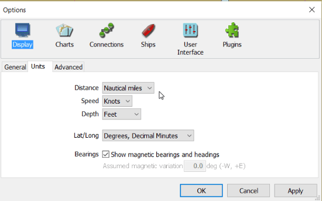
Distance The options are: Nautical miles, Statute miles, Kilometers, and Meters. Short distances are less than 0.1 mile or 0.1 kilometer. If nautical miles or kilometers are selected short distances are shown in meters. If statute miles are selected short distances are shown in feet.
Speed The options are: Knots, Mph, km/h, and m/s.
Depth The options are: Feet, Meters and Fathoms.
Lat/Long The options are: Degrees, Decimal Minutes; Decimal Degrees; and Degrees, Minutes, Seconds
Bearings If “Show Magnetic bearings and headings” is ticked OpenCPN will use magnetic courses and bearings. By default OpenCPN uses true courses and bearings etc. Note that OpenCPN knows nothing about deviation. All magnetic courses and bearings will have an (M) suffix to show they are magnetic.
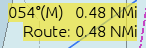
The following settings will be affected: Bearings and Courses in the Route Properties dialog, route leg rollovers, and Active Route console will be (M). COG displayed on the bottom status line will be COG(M). AIS target reports will show target COG(M).
Variation will be calculated at Own Ship's position, if possible. AIS targets however, will use the targets position for variation, if possible.
How does OpenCPN know about the variation?
- If a GPS receiver that reports variation as part of RMC sentence, is available, this value will be used.
- Otherwise, if the WMM plugin is installed and activated, it will supply the variation.
- Lacking the above alternatives, the manually entered “Assumed Magnetic variation”, will be used for all calculations.
Assumed Magnetic variation This value will be used if variation is not available through the GPS or the WMM plugin. The default value is 0°. Positive values denote easterly variation, negative values denote westerly variation.
Advanced
Chart Display
Show skewed raster charts as North-up Skewed chart are normally shown as intended by the cartographer, “Chart up”. If this option is selected they are rotated to show North-Up. If you are looking for speed, don't tick this box. It slows down the screen rendering. Skewed charts are a common along the US Inter-coastal Waterway. More here: Auto Followand Display Orientation
Disable Full Screen Quilting: By default all visible charts of an appropriate scale are used in the quilt. With this box checked only charts that overlap the center of the screen are used in the quilt. Checking this box is easier on the system and may give a performance boost in certain circumstances.
Suppress blur/fog effect on overzoom Charts are commonly based on surveys that are twice the scale of the charts natural scale. For example a chart in 1:50,000 would be based in a survey in 1:25,000. Once a vector chart is zoomed in to a factor 2, the data do not support any more details. OpenCPN makes the navigator aware of this fact in a few different ways.

This screen-shot shows an example how overzoom warnings are shown.
At a zoom factor of 4 the embossed OverZoom warning will be displayed in the NW part of the screen. This applies to vector charts and raster charts using the Mercator projection.
From a factor 10 to 30 a blur or gentle bluish fog will be overlaid on vector charts. Overzoom blurring is performed only for those systems with modern and fully capable OpenGL drivers/cards. Otherwise, a very gentle “fog” is applied to extreme overzoom displays, as a visual que to the user that the chart is highly overzoomed. From a factor 10, lines and depth numbers on vector charts will be scaled and appear bigger, to further indicate the imprecision of chart features at high overzoom. This imitates what happens with a raster chart, when the individual pixels gets bigger and bigger.
If “Suppress blur/fog effects on overzoom” is selected the blurring or bluish fog, will be turned off.
Suppress scaled vector charts on over-zoom If this option is selected the scaling of lines and numbers on vector charts will be turned off.
Note that the blurring effect and scaled vector charts does not apply to single chart mode, so these effects can be turned off temporarily by toggling the “Q” hotkey.
Below is how it looks like with both the above options activated.

Course-Up Mode Display Update Period This relates to how often the entire displayed chart is updated. The Own Ship and AIS icons are still updated every second. The default value is 15 seconds. A “zero” value is allowed! The default mode is North-up. It's easy to switch between the two modes through the right-click menu.
Chart Zoom/Scale Weighting This option has a short description, on screen. Here are some further notes. The slider applies to zoom operation dynamics, not to static chart selection. The option really asks you this question. “On zooming in, when do we switch to a smaller scale chart if available?” Your answer may depend on your screen resolution and other preferences. The slider affects zoom-in operations most directly. Setting the slider to -5 delays switching to smaller scale to improve performance and visibility. Setting the slider to 0 restore the default behaviour. Setting the slider to +5 switches sooner to a smaller scale chart to show more detail. It ias not intended that a user exercise this control very often. Maybe experiment, set it to your liking for average charts in your area, and leave it set.
Controls
Lock Waypoints (Unless waypoint property dialog visible) Locks waypoints and prevents accidentally moving them unless a waypoint property dialog is visible. Selecting this option reduces the risk of accidentally altering routes and waypoints but makes editing them more cumbersome.
Confirm deletion of tracks and routes If selected this option provides a safeguard against deleting important data by mistake.
Physical Screen Width If set to “Auto”, the default setting, OpenCPN will use the size that the operating system reports. Unfortunately this is not always correct, leading to an incorrect scale on screen for the charts. The OpenCPN log will state what your operating system thinks about your screen size.
| 19:03:44 CET: Detected display size: 338 mm |
You can manually enter the width of your screen by selecting “Manual” and entering the width in millimeters. The value shown is from a sample 17“ screen.
Graphics
Use Accelerated Graphics (OpenGL) The net effect of full OpenGL optimization on raster charts with compatible hardware is nothing short of amazing, especially with low-spec, low-power systems. Unfortunately the support for OpenGL on Windows is sometimes problematic. Intel's OpenGL graphics drivers on Windows are very buggy, for example. Read more on the OpenGLpage!If you have started OpenCPN without OpenGL support, this option will be greyed out.
Options The standard Option dialog looks like this

An expert version is available by adding a line to the opencpn.ini (opencpn.conf) file.
[Settings]
....
OpenGLExpert=1
To turn the expert version off, change the value from “1” to “0”, or delete the line.

Use Accelerated Panning works if your graphics card supports Frame Buffer Objects.
Texture Compression greatly improves the speed of raster chart display. It works by treating raster charts as compressed textures instead of bitmaps, and these textures are loaded and displayed much more efficiently by the graphics hardware. They also consume much less GPU memory space.
Texture Compression with Caching A further improvement to raster chart display loading and panning. This option uses the system hard drive to store pre-calculated raster chart compressed images in a way that is optimized for direct loading into the graphics card. When enabled, the texture cache is created dynamically, as charts are visited in normal navigation. Depending on the OpenGL hardware capabilities, there may be some slight, but noticeable, delay as a chart is accessed the very first time while the textures are created, compressed, and written to disk. Once a particular chart section has been cached, subsequent accesses are very fast. If the OpenGL hardware texture buffer is capable, then rendering on-screen is virtually instantaneous.
- The cache understands color scheme changes. Cache entries are automatically created for each of the 4 possible BSB color schemes, as they are encountered in normal operation.
- The cache understands chart Edition Dates. So, if one manually updates a chart (thus changing the chart's Edition Date), the old cache contents will be discarded, and a new cache will be built automatically as the new chart(s) are visited.
- Using compressed texture caching retains all the benefits described earlier. It is very much faster on low spec hardware, at the expense of more disk space usage.
- There is a command line option which will build/update your compressed texture cache. You may execute opencpn like this: opencpn /rebuild_gl_raster_cache (-rebuild_gl_raster_cache on linux)
- “Texture Compression” and “Texture compression caching” may actually slow down some machines, depending on the capabilities of the video system.
- If you are using OpenGL on a low-spec machine, you will have better performance if you
- disable texture caching, or
- Pre-build the texture cache in a region of interest. That is, move the boat to say Dover. Then do Options→openGLOptions→Build Texture Cache. You do not need to wait the entire time, which may be hours for a large chart set. “Skip” out when the distance reported is 100 miles or so. Eventually, after steady use, your texture cache will be filled automatically in the background, and performance Show FPS will increase steadily.
The size of the current “Texture Cache” appears just to the right of the button “Clear Texture Cache”. In the picture above this value is 101.8 MB.

- Show FPS FPS stands for Frames Per Second, and is one way measure OpenGL performance. The number appears in the lower right hand corner of the display, to the right of “Scale”. Above you see “26 fps”. If you report a graphical problem, expect the devolopers to ask you about this figure.
- Enable Transparent Toolbar. This option is grayed out in OpenGL mode, as the feature only works in traditional mode. On Linux it is necessary to activate a window manager compositing system, such as Compiz or GNOME Shell, to have a transparent toolbar.
The Chart
Chart Files

Add Directory In OpenCPN charts are added by adding the directory (folder) that contains the chart files. This tab is where charts are added and removed. Read about the details in Installing Charts
Remove Selected Mark the chart directories that are no longer needed, press the button an then “Apply” or “OK”.
Scan Charts and Update Database Use this option if you have made any changes to the contents of your chart directories, as for example after downloading new charts from NOAA, etc. It need not be checked if directories are added or subtracted, as the entire database will be scanned and updated automatically in this case.
Force Full Database Rebuild is mainly aimed at users converting or correcting existing charts, in a situation where changes are made to the geo-referencing, outline of the chart, or other attributes in the kap file header section.
Prepare all ENC charts converts all existing S57/S63 charts to an internal SENC format for fast loading. The button is there on popular request, and means that O don't stop to process a chart when encountered the first time, but instead process all charts at once. The process can take quite some time, depending on your system. If you already done the new conversion once and add a chart, pressing the button will be fast as only the new chart is processed. NOTE: There is also a new naming system for the processed files. It's a good idea to delete the SENC folder the first time you use the new beta, and then press “Prepare all ENC charts”. The only reason for this is to save some space on your hard desk.
Vector Charts Display
Chart Groups
Tides & Currents
The Connections
The Ships
Own Ship
Display Options
COG Predictor Length (min) Shows a red dashed line in front of your own boat, with present COG and ends in a small square, which represents where you will be in the set number of minutes, with the present speed. 6 minutes is a good starting value for piloting. If your vessel has a SOG of 10 knots the dashed line will be 1 nautical mile long. 60 minutes makes sense on a coastal passage and 24 x 60=1440 minutes on longer blue water passages.
Heading Predictor Length If a heading sensor is available and outputs an nmea data stream, this is shown as a finer line with shorter dashes ending in an open small circle. The length is set in Nautical miles.
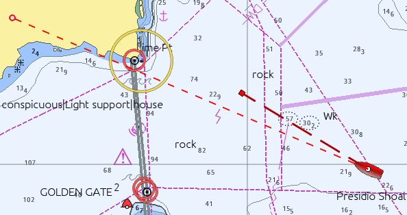
The width of the COG Predictor can be adjusted in the opencpn.ini configuration file. Find the line below and adjust the value.
OwnshipCOGPredictorWidth=3
Warning: Don't edit the opencpn.ini (opencpn.conf) file when OpenCPN is running.
Ship Icon Type The following options are available for ownship:

Default This will use the icon that comes with OpenCPN, unless you have installed your own icon, “ownship.png”. More about installing your own icons in Marks and Routes.
Real Scale Bitmap This option will adjust the size of the default icon, depending on your settings. When using this setting, the dialog expands and five more options related to the size of “ownship” become available. See picture below
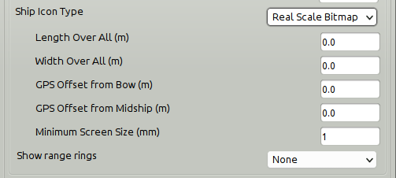
Length Over All (m) The overall length of Own Ship in meters
Width Over All (m) The overall width of Own Ship in meters
GPS Offset from Bow (m) The distance in meters from the bow of Own Ship to its GPS antenna
GPS Offset from Midship (m) The distance in meters from Own Ship's center line to its GPS antenna. Use a positive value for an offset to starboard and a negative value for an offset to port.
Minimum Screen Size(mm) The size of the Own Ship icon on the screen. Default is set to 1mm.
Real Scale Vector works the same as the previous option with the exception that ownship is a somewhat boxy, computer rendered ship. It's currently not possible to change the vector-own-ship.

The dot represents the set location of the GPS.
Show radar rings These show up as red rings centered on your gps position and can be useful in different circumstances, such as keeping clear of dangers. The settings are, hopefully, intuitive.

Once the number of radar rings are selected, and not equal to “None” the dialog expands, and shows more settings. The Distance Unit for Radar rings is set here, and does not follow the the global settings in Options→Display→Units. The choices are Nautical Miles and Kilometers
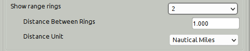
Tracks
Automatic Daily Tracks Automatic Daily Tracking ensures that the track-points collected throughout a single day (midnight to midnight in local zone time) are stored and managed as a single (possibly multi-segment) track.
If the Automatic Daily Tracking check-box is selected, the “Toggle Tracking” tool will turn tracking on and off. However, on turning it off, the accumulated track will be extended with the previous one if it does not extend into yesterday. Disjoint segments are kept separate, time-adjacent segments are merged into a single segment. Disjointed track segments can be joined through the right-click menu when they are selected in the Route Managers Tracks Tab.
Every Midnight the tracking is turned off and on again automatically to ensure that the track does not span dates. If Automatic Daily Tracking is selected during the day, when some tracks have already been created, only the last one will be merged with future daily tracks.
Assuming Automatic Daily Tracking is on, normally during tracking periods there will be two tracks visible in the Route Manager: the current track (red color track-points on the chart) and the previously accumulated track for the day. After toggling tracking off there will be just one track for this day.
If the timezone needs to be changed, it is a good idea to close OpenCPN application before.
With the manual capability of splitting and extending, the daily tracks can be easily managed at any time.
The daily tracks will be automatically named with the date in the local Time Zone, but can of course be changed manually.
The Automatic Daily Tracks follow the settings in Tracking Precision, see below.
Without Automatic Daily Tracks selected, OpenCPN handles tracks as before.
Highlight Tracks shows a 7 to 10m wide highlighting on either side of the track. This is not selectable for individual tracks. The idea of the highlighting is to remind us that following a previous track exposes us to the inherent inaccuracy of GPS, and that the real track followed is most likely within the highlight region, but not necessarily in the middle. And this says nothing about the accuracy of the underlying cartography. For many charts it is prudent to assume at least 1.5 mm inaccuracy using the nominal scale of the chart. For a chart in scale 1:20,000 this translates to 30m.

Tracking Precision

With track button in the ToolBar activated this setting affects the size of the data saved. It also affects the “smoothness” of the track, though this is only visible when zoomed in to a very large scale. OpenCPN uses smart dynamic tracking, and only uses those track points that actually contributes anything to the track. A straight line track for example is only represented by it's endpoints. This is done by analyzing the track just behind the boat. The process is visible in real time, close to Own Ship. The end result is good track accuracy while keeping the size small.
- Low: Good for offshore passages.
- Medium: Very good for all normal uses.
- High: Only necessary when very tight maneuvering needs documenting.
Routes
Waypoint Arrival Circle Radius gives an answer to this question. When following a Route with the autopilot engaged at what distance from the upcoming waypoint should OpenCPN tell the autopilot to change to the next waypoint? The default is 0.05 nautical miles. This is equal to about 93 meters or 300 feet. The default setting does not fit all circumstances. A number of factors are involved, for example,
- the type of navigation,
- the waypoint selected,
- Own Ship's turning radius and speed.
Find what settings suit your boat by testing.
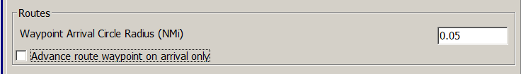
The arrival radius can also be set individually for each waypoint in the Waypoint Properties dialog.
Advance route waypoint on arrival only
Routes are explained in Marks and Routes. With an active route, the Dialog “This Leg” is visible near the upper right corner of the screen. This dialog contains “RNG”, the “actual range”, or distance to the next waypoint. The “normal range” is different. It is the distance from ownship to a line which passes through the destination waypoint and is at right angles to the current route segment. The actual range is always equal to or greater than the normal range. When the difference is greater than 10% both values are shown in “RNG” (Shown in the Active Route Console
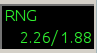
The “normal” range is the second number shown. 1.88 in this case.
When following a Route OpenCPN normally decides to advance to the next waypoint if at least one of the following two conditions apply.
- The “normal range” is less than the declared arrival radius.
- Own Ship is moving away from the target waypoint, and has been for more than two seconds.
With Advance route waypoint on arrival only activated, OpenCPN only advances the route to the next waypoint, if condition 1 above is true. Condition 2 is ignored.
This feature is useful when sailing and you can't lay the next mark and are forced to tack a few times to reach it. It allows a ship to move away from waypoint without automatically advancing to next waypoint. This ensures that the next waypoint stays active until you either reach it, or you reach a line through it, which is perpendicular to the marked route. In the latter case you have a cross track error greater than the arrival radius.
On the other hand…. Option 2 helps you if you really want to cut a corner by a large distance in such a way that the “normal range” will never be less than the arrival radius. We want to automatically advance the route in this case.
AIS Targets
MMSI Properties
Maritime Mobile Service Identifier (MMSI) is a number identifying a ship in communication. MMSI consists of nine digits. All VHF units using Digital Selective Call (DSC), are programmed with the vessels MMSI. The same applies for AIS and EPIRBs.
MMSI numbers, individual targets, can be handled in a few preset ways. Below we have set 970000099 as an MMSI that should be tracked as a MOB. The number could for example belong to a crew member's Personal Locator Beacon.
Several MMSI IDs below are set to never show their tracks. This can be used on frequent targets in your neighborhood, like ferries etc. The MMSI 219000368 is set to never be shown. Be aware that neither this target nor its track will ever be seen on your screen.
The MMSI 219010183 is set as “Follower”. This is a buddy and no AIS Alert is shown. The “MMSI Properties” popup becomes available when right-clicking. Doubleclicking on the MMSI bypasses the popup an takes you directly to the Properties edit dialog.
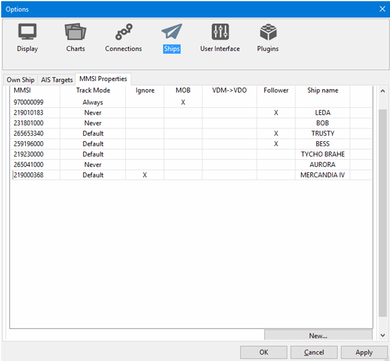
Add a new target to track
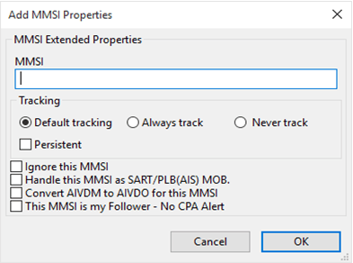
MMSI: Enter the MMSI number that the new action should apply to.
Note: An MMSI Id used to be nine digits. A warning message will be shown if the entry is more or less.
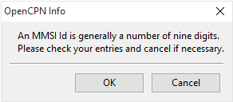
If you for some reason, wish to save a non-nine-digit number click “OK”, otherwise “Cancel” will take you back to edit the number.
MMSI Tracking
Default tracking This is the normal tracking controlled by Options→Ships “OwnShip” and “AIS Targets” tabs.
Always track and Never track The MMSI Properties dialog allows one to preset the tracking behavior of a particular MMSI target, even if the target is not presently visible. Always track a friend or a ship you are interested in. Ignore that ferry that just clutters your screen. Just a few examples.
Ignore this MMSI The target will not show at all on the screen.
Handle this MMSI as SART/PLB MOB. With this setting a MOB from your ownship will be signalled immediately. Special Search and Rescue Transponders, SARTs, are now available, using the AIS system. Personal Locator Beacons transmitting on the AIS frequencies are also available. These are sometimes called Personal AIS MOB Devices. Don't confuse these with the more common personal EPIRB, that cannot be tracked by OpenCPN.
Entering the the MMSI number makes it possible to use these devices as an onboard emergency MOB tracking system. Setting off a device alarms all vessels that can receive the signal but it tells you that this emergency is directly related to your vessel. OpenCPN will now treat this MMSI as a standard MOB. Read more Man OverBoard.
The alarm is entered in Options → Ships→ AIS Targets →”Play Sound on CPA/TCPA and DSC/SART emergencies.“ Have a look at AIS SARTto see how OpenCPN reacts to an alarm.
Convert AIVDM to AIVDO for this MMSI
- AIVDM NMEA 0183 sentence → AIS position reports from other vessels
- AIVDO NMEA 0183 sentence → AIS position reports from own vessel
The setting is intended for at least the following very specific scenario:
- You have an AIS transponder, not connected to your computer.
- You have a separate AIS receiver, used to monitor your own AIS signal, as well as all other traffic.
- You desire not to collide with yourself, virtually.
So you instruct O to convert the AIVDM for your MMSI coming in via your AIS receiver into AIVDO, or Own Ship. Thus, no collision. There may be other uses for this VDM→VDO conversion.
This MMSI is my follower – No CPA Alert When this option is active no AIS Alert will be shown for that target. This can be used for a buddy sailing close to you and you don't wont a CPA alert message for that target but still for other ships coming too close.
Ships name The Ship name connected to a MMSI ID will be added to the list once the new ID is saved or edited. The ship name is automatically printed provided that the actual ship is present on screen or has previously been and was saved in the AIS ship name file. In either case the ship name will be added first time the boat is present in OpenCPN.
The User Interface

Languages: The following languages are available in OpenCPN:
- Brazilian Portuguese
- Catalan
- Chinese
- Traditional
- Czech
- Danish
- Dutch
- English
- Estonian
- Finnish
- French
- Galician
- German
- Greek
- Hungarian
- Italian
- Norwegian Bokmaal
- Polish
- Portuguese
- Russian
- Spanish
- Swedish
- Turkish
Choose your language here. Make sure your selected language has the support files installed on your computer (Linux). Default language is US English.
Remark: Changing the language will reset the font settings.
Toolbar and Window Style Menubar. The alternatives are described in Toolbar Buttonsand Windows/Mac style MenuBar
Fonts. On a new installation OpenCPN uses the operating system's default fonts. This can be changed to suit the user through this dialog. Fonts can be selected for many elements on the display. Selecting the right size of font can have a dramatic impact on how values are presented. It's well worth playing around with these settings if you think that something is difficult to read for example. Note that even the text displayed on vector charts can be adjusted.
Pick from the Dropdown List
- AIS Target Name - Target List font size
- AISRollover - Yellow rollover font size
- AISTargetAlert - Popup alert font size
- AISTargetQuery -Query Popup
- ChartTexts -
- Console Legend - Active Route Console XTE, Bearing, etc (upper right black box, see below)
- Console Value - Active Route Console - Font Size of the data presented.
- CurrentValue -
- Dialog - AIS Target List
- ExtendedTideIcon -
- Marks - Properties font size
- Menu - Main menu font size
- ObjectQuery -Object Query font size
- OD_PathLegInfoRollover - OD Plugin Yellow Rollover font size
- OD_PointInfoRollover - OD Plugin Yellow Rollover font size
- RouteLegInfoRollever - Route Leg Yellow Rollover font size
- StatusBar - Status Font at bottom
- TideCurrentGraphRollover -
- ToolTips -
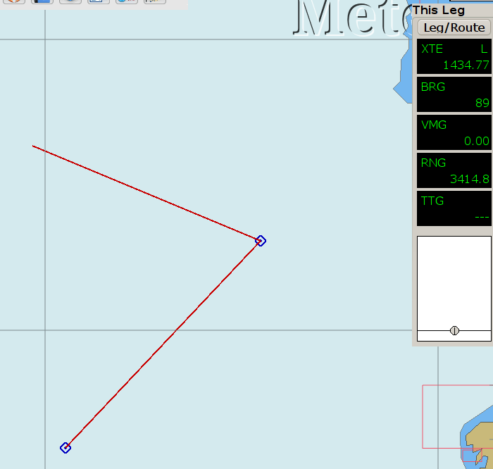
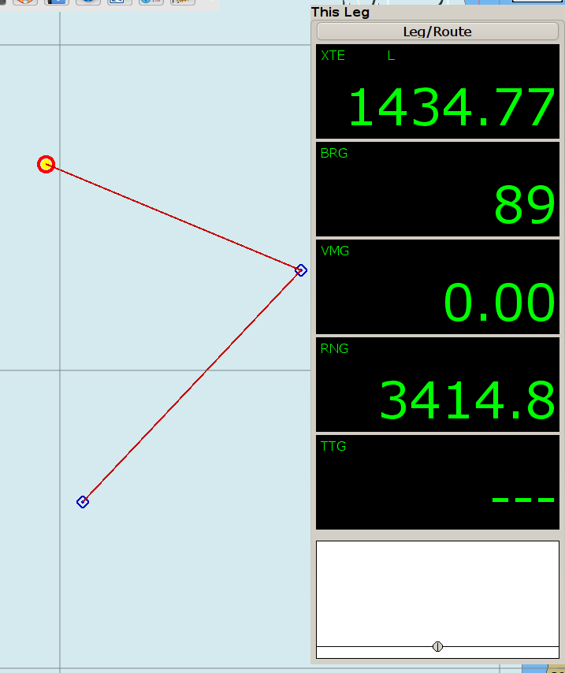
The result of adjusting the “Console Value” font size.
There is a side effect of the Font management module, which is worth noting. One must actually display something in a particular Font List category (ChartText, Console Legend, Console Value, etc.) in order for the item to appear in the list for the first time. Thereafter, the item should stay in the list and be available for editing. For Example: You may not see the Font List entry for “AIS Rollover” unless you have actually displayed an AIS Rollover message at least once. Of course, if you re-install OpenCPN or start with a new config file there may be limited entries in the FontList.
Change Font Color to suit your taste.
Show Status Bar. The status bar at the bottom of the display contains a lot of navigation information. If you have this info available elsewhere turning this setting off increases the available space for the chart.
Show Menu Bar Show/Hide the Menu Bar. More about MenuBar
Short Cut: “Alt”
Show Chart Bar Show/Hide the Chart Bar. More info available on the Chart Status Barpage.
Short Cut: “Ctrl + B”
Show Compass/GPS Status Window Show/Hide the Compass/GPS Status Window. More info on the GPS Statuspage.
Short Cut: “Ctrl + I”
Enable Toolbar Auto Hide Enter number of seconds for the Toolbar to automatically hide.
Play ship bells Every half-hour the traditional ship's bell will be heard. Refer to https://en.wikipedia.org/wiki/Ship%27s_bell if you are not familiar with them.
Graphical User Interface
Enable Touchscreen/Tablet Interface Read more at Touch Screen Tablets
Enable Responsive graphics interface for Touchscreens. The option is intended for small (~8”) tablets with high definition displays. What it does is adjust the various graphic elements such as menus, icons, etc. so that they meet the best practice size standards for Win8/Android system displays. This makes them “big enough” to facilitate touching, dragging, etc with normal human fingers. You should not see much difference when selecting this option for normal desktop or laptop systems.
Use Settings for InlandECDIS Switch to compliance mode for Europe inland ECDIS in information mode.

If either of the Graphical User Interface boxes are checked, the slider “User Interface scale factor” changes the size of the Tool Bar, Chart Bar and the GPS status icon.
If the “Enable Tablet Scaled Graphics interface” is checked, the slider “Chart Object scale factor” changes the size of chart objects including: Marks, Routes, Buoys, Daybeacons, Wrecks, Rocks, and Depths.
The Plugins


{kind=link}
{kind=link}
{kind=link}
{kind=link}
{kind=link}
{kind=link}
{kind=link}
{kind=link}
{kind=link}
{kind=link}
{kind=link}
{kind=link}
{kind=link}
{kind=link}
{kind=link}